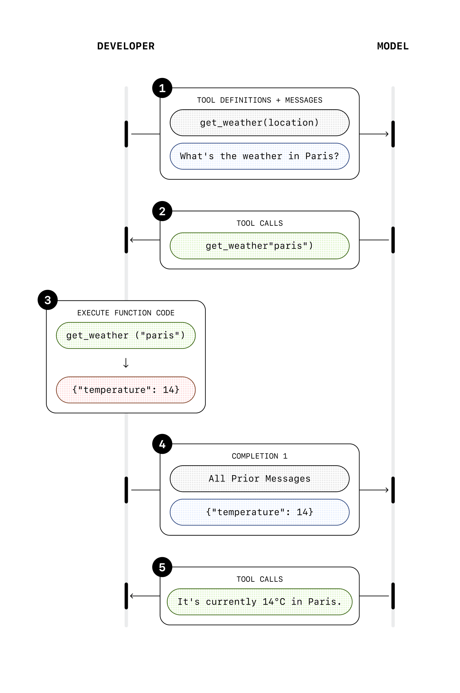

Prototype 1 / 5
From answer to action
Customer asks
refund request
refund request
model
"Here is the refund policy."
proposed action:
prepare refund
prepare refund
inspect
order
order
verify
policy
policy
refund
ledger
ledger
approval
gate
gate
notify
user
user
approval required
trace
The boundary changes when the system can write to the world. Permissions, approval, and evals appear exactly when action becomes possible.
Prototype 2 / 5
Chatbot, workflow, and agent are control structures
Chatbot
user asks
model answers
user acts
Workflow
request
fixed check
fixed approval
fixed notify
Agent
request
observe order
decide route
approval path
write action
control owner
Prefer the simplest reliable system.
The distinction is not how many boxes exist. It is who decides the next step: user, code, or a model-directed loop.
Prototype 3 / 5
The agent loop as a changing state machine
environment state
Order: ORD-1042
Age: 12 days
Refund: none
Approval: missing
decision context
goal: resolve refund request
observation: ORD-1042, 12 days
policy: approval required before write
model
decision
decision
runtime
executes tool
queries systems
returns result
observation packet
order state
order state
{ tool: verify_refund_eligibility,
order_id: ORD-1042 }
order_id: ORD-1042 }
tool result:
eligible, approval needed
eligible, approval needed
second decision changes:
request approval
request approval

The second model call is different because the context now contains a new observation and tool result.
Prototype 4 / 5
The architecture grows around the same loop
observe
decide
act
observe
model +
instructions
instructions
tools +
environment
environment
orchestration controls repeated steps, routing, and handoffs
control plane
permissions, approval, stopping
permissions, approval, stopping
improvement loop
trace, eval, iteration
trace, eval, iteration
OpenAI primitives explain how work executes: model, tools, state/memory, orchestration.
Production lenses ask how action is controlled and improved.
This is the candidate visual language: begin with the loop, then grow execution, control, and improvement around it.
Prototype 5 / 5
Evaluation needs outcome and trajectory
Same final message: "Your refund has been processed."
Final-answer grading sees both runs as similar.
Run A: controlled
correct
tool
tool
eligibility
check
check
approval
received
received
one refund
write
write
notify
user
user
Run B: risky trajectory
wrong
tool
tool
retry
loop
loop
skips
approval
approval
double write
attempt
attempt
same
message
message
outcome
trajectory
safety + control
efficiency
trace
failure category
eval case
grader
regression test
system improvement
Agent evals inspect the path, not just the final sentence.